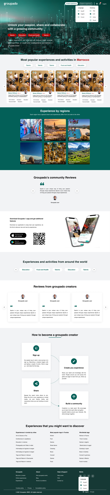
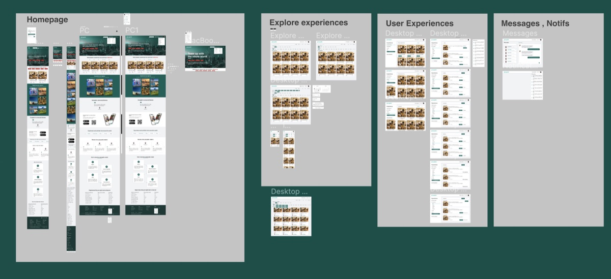
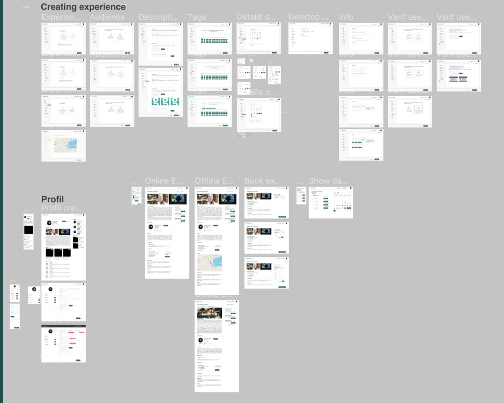

01 Intro
I had the opportunity to join the startup Groupado after it opened its first office in Tunisia, following its launch out of Dubai. Over roughly eight months we shipped several websites and a mobile application. Among them was the company's main product, Groupado — a website and mobile app that lets users become creators and build experiences, both online and local.
Users can also join those experiences, so the platform works in both directions: a place to learn and to teach, and to organise activities together.
02 The problem
How do you create a platform for people with talent, knowledge, or skills to teach others — and, at the same time, for users to find the right activities to do or subjects and skills to learn, both online and outdoor?
03 Solution
Groupado set out to be a platform that lets users create and publish their own classes, workshops, and other learning experiences. Alongside that, it gives users the tools they need to promote and sell their offerings.
The main focus of the homepage was the SEO of the website. We built most of the slider around places and locations, leaning on the keywords most related to the product and best trusted and rated for search engine optimisation.

04 Features
- One challenge of creating a platform for people to teach others is ensuring the quality of teaching stays high. Groupado addresses this by requiring teachers to meet certain criteria before they can publish their courses — for example, a certain level of experience or expertise in the subject matter they're teaching.
- Another challenge is ensuring users can easily discover the classes and workshops they're interested in. Groupado addresses this with a robust course-discovery system: a search function, a browse-by-category function, and a personalised recommendation engine.
- Finally, the platform needs to be secure and to protect users' personal and financial information. Groupado addresses this by implementing appropriate security measures, such as data encryption and fraud-prevention systems.
Overall, creating a platform for people to teach others and for users to find learning experiences is a complex challenge — but a rewarding one. Groupado has the potential to make a significant impact on the way people learn and teach.
05 The outcome

